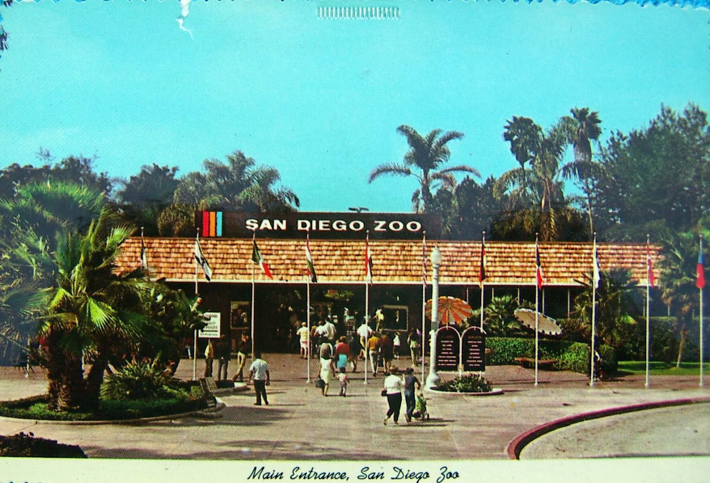

{kind=link}
You probably have a limited amount of time and a certain set of priorities, so let's sort out the best things to see and do while you're here.
There are things in every city that locals consider a must-see for newcomers. If you're the type of traveler who wants to experience the most famous sights of a city, start here!
Beaches : San Diego's beaches are probably the number one draw for visitors, with good reason. With miles and miles of coastline, we have a beach for everyone. The North County beaches tend to be a bit cleaner, mostly visited by locals and surfers. Mission and Pacific Beaches are the 'party' beaches, where the dude-bros, frat boys, jocks and college kids hang out. They're connected by a long boardwalk, great for people watching. South Mission beach also has a ton of publicly-maintained volleyball courts, if that's your thing. La Jolla is probably the most manicured and well-behaved beach zone (not surprisingly; the village of La Jolla is one of the most posh neighborhoods in the county.)

Seaport Village, via Wikimedia
{kind=link}
Seaport Village : this is a great place to go for dinner and souvenir shopping, especially after dark. It's charming, it's right on the bay, and you'll get a great view of Pt Loma and Coronado from the boardwalk. Nearby, you can catch the ferry that takes you across to Coronado Island. It's also very close to both the convention center and the cruise ship terminal, making it a great choice for quick day-trips.
The Gaslamp : what used to be a pretty run-down area of downtown as been completely revitalized and turned into a nightlife hotspot, steps away from the Convention Center and the new(ish) downtown ballpark. Tons of restaurants, bars, pubs, and clubs here. There's also a convenient trolley stop, so if you're staying in Mission Valley you can take transit and not have to worry about parking or cabs!
Old Town San Diego : this is San Diego's historic district, even though it's been extensively rebuilt and commercialized. You can still see quite a few historic buildings from the pre-USA era, and eat some decent mexican food while drinking a margarita the size of your head. This is also a great place to pick up some pretty unique souvenirs. If you're lucky, you'll visit on a day when the tortilla ladies of Cafe Coyote are open for business. If, like many North Americans, you think you like flour tortillas better than corn because corn tortillas are dry and bland, these ladies will change your mind.
Casinos : I hesitate to mention these, because I have complicated feelings about them; but like Sea World, they are a thing that visitors often like, so here goes. There are many, many casinos in San Diego County. Because they are usually out east, pretty far from downtown, many of them also have attached hotels (some with outlet malls, some with golf courses). If gambling is your thing, San Diego definitely has you covered.
San Diegans LOVE their sports. As participants or spectators or both, just about everyone has a favorite or three.
Surfing : Let's start with the obvious. You can watch surfers at just about any beach; most radio stations include surf reports along with weather and traffic in the mornings and afternoons. There's even a surf museum. If you want to learn to surf, there are probably hundreds of local surf schools. Find a local surf shop and ask if they have suggestions.
Skiing and snowboarding : Um, San Diego is a beach town, what are you talking about with the skiing. Well, there are mountains nearby, and many a San Diegan spends winter weekends up at Bear Mountain or Snow Summit. If you happen to be visiting during a winter warm spell, you can even surf AND ski in THE SAME DAY. Crazy, right? Anyway, surf shops often double as ski shops in the winter, so if you want to know what the conditions are like up in the mountains on any given day, they can probably help you out. There's even one shop up in Encinitas with a big ol' rolling carpet ski hill in the parking lot, where they give lessons ALL YEAR ROUND. If you're thinking that that sounds easy, I dare you to try it.
Skateboarding : "What? That's not a sport!" you might be thinking, but in SoCal it definitely is. There are skateparks and skate shops EVERYWHERE. It's not at all uncommon to see surfers skateboarding down to the beach with their board under one arm.
Hiking : Hiking buffs, you have not been forgotten. There are some amazing views to be had from hiking trails in the county's many state parks. On the coast, there's Torrey Pines; not the toughest hike, but it's on a cliff right above the beach and it is stunning. Inland a bit, there's Mission Trails park, with trails for just about any level. To the east, there are lots of mountains and then a desert, so you could really spend your whole time hiking and camping.
Golf : I almost forgot about golf! Lots of world-class golf courses in San Diego, and they're open year-round. Torrey Pines and La Costa are probably the most famous - if you want to get a tee time on one of them, you might want to try to reserve well in advance of your visit, depending on the season - but there is almost guaranteed to be at least one decent course pretty close to wherever you end up staying. I'm not a golfer, at all, but this guy seems to have opinions so I'll defer to him.
Baseball, football, basketball : San Diego has two pro teams, both historically under-achieving. In summer, you can catch the Padres down near the water at Petco Park; in the fall, the Chargers might be playing in Mission Valley, at Qualcomm Stadium. And while there are three large universities in town, only one of them - SDSU - has an NCAA sports program. I hear their basketball team is usually pretty good, although I don't really care about college sports, personally.
Cultural Highlights

The California Tower in Balboa Park, via Wikimedia
{kind=link}
Museums
If you ask anyone in town where to find the best museums, they'll probably say Balboa Park. Balboa Park was built for the (???) Expedition, and most of the buildings from the fair still remain. They house various museums, from the San Diego Natural History Museum, the Museum of Man, and the Museum of Art. You could easily spend several days in the park just visiting museums and the nearby zoo, not to mention wandering through all the gardens and the various cultural and historical societies that now inhabit the rest of the buildings. This is my #1 place to go when I have time to spare in San Diego. Even if you don't have time to properly enjoy the museums, the park itself is absolutely worth a visit. Just note that there aren't that many places to eat in the park itself - The Prado is the one worthy exception - so plan it for an afternoon and then head downtown or into nearby Hillcrest for dinner.
San Diego history: Missions and Old Town
The first Europeans to colonize the San Diego area were the Spanish, and you can still see their influence everywhere ('Balboa' this, and 'Mission' that). If you want to learn more about the colonization period, check out one of the two historical Spanish Missions in the area : Mission San Luis Rey, up in Oceanside, or Mission San Diego de Alcala, in Mission Valley. If you want to learn more about the people who lived here BEFORE the Spanish came and 'civilized' the area, visit the Museum of Man in Balboa Park.
As I mentioned above, Old Town San Diego is probably one of the most popular tourist destinations in the city. If you want to see the historical side of it, google or ask your hotel if they have suggestions for a walking tour. A lot of the interesting buildings in the park are a bit hidden, so if history is your thing, a tour is definitely worth it. Go for the historical Spanish dwellings (and a haunted house), stay for the massive margaritas.
Music and Theater
There's a pretty good music scene in San Diego! My personal favorite venue is the Belly Up Tavern in Solana Beach. You can park near the train station just up the street, head across the tracks for some pizza and beer at Pizza Port, then head over for the show. If the timing works out, you might even be able to take the train there and back from downtown!
Family Friendly
{kind=link}
The San Diego Zoo and Safari Park : the Zoological Society of San Diego operates these 2 very different, but both very awesome, zoos. One, the San Diego Zoo, is located close to downtown in beautiful Balboa Park. The Safari Park is about half an hour north, in Escondido, on the edge of an agricultural preserve, and is likely to be unlike any zoo you've ever visited. They sell 2-park combo passes so if you even think you might want to check out both, pick one up.
Legoland : if you have kids under 12 this is probably going to be the highlight of the trip for them. The crazy lego sculptures are fascinating for kids of all ages, but most of the rides are targeted for younger kids. There's also an outlet mall nearby with some pretty safe chain restaurants if you don't want to shell out for overpriced bland theme-park food. (Canadians - a warning about Claim Jumper. The portion sizes will shock you and make you fear for the future of America.)
Sea World : In recent years Sea World has expanded quite a bit from being just a really big aquarium; they now have rides and rollercoasters and stuff too. I personally don't really like the fact that they keep giant mammals in itty bitty tanks, but kids love it.
The Southern California City Pass is probably your best bet if you plan to do all of these things.
Local Faves
North Park & Hillcrest, PB/OB
Coronado Island - drive across the bridge, or take the ferry from downtown. If you want to check out the historic Hotel Del Coronado, you're probably better off driving - it's a bit of a walk from the ferry docks, or a pretty quick cab ride. Either way, it's an absolutely beautiful place. Lots of great trees, good food, and the hotel has an amazing beach just outside the doors. In the winter they'll sometimes set up an outdoor skating rink (despite the fact that it's rarely cold enough!) right on the beach.